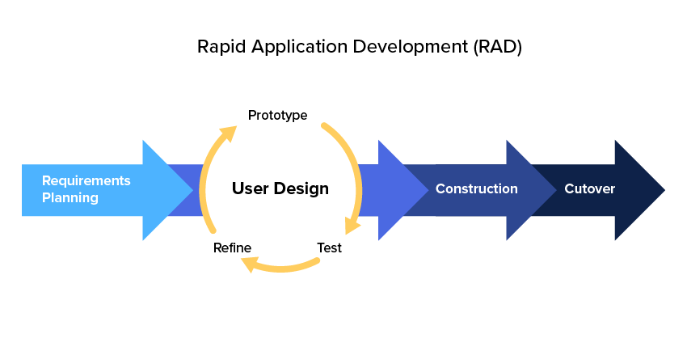

SISTEM INFORMASI SEKOLAH MENENGAH PERTAMA PANCASILA MENGGUNAKAN METODE Rapid Application Development

5200411476 Risky Divandra Hartana
5200411477 Robi Ardiansyah
5200411478 Cipta Andika Putra Pratama
5200411479 Cornelius Agova Madu Putra
5200411480 Faris Yudhika Ardana
PROGRAM STUDI INFORMATIKA
FAKULTAS SAINS & TEKNOLOGI
UNIVERSITAS TEKNOLOGI YOGYAKARTA
2020/2021
BAB I
Pendahuluan
1.1 Latar Belakang Masalah
Dinamika persaingan bisnis dalam perkembangan teknologi informasi saat ini terasa berdampak bagi sebagian besar masyarakat. Keadaan ini menyebabkan perubahan disegala bidang seperti perdagangan, pendidikan, kesehatan, hiburan. Arus informasi yang lebih cepat dan murah menjadikan para pemberi informasi harus memiliki sebuah media secara online. Penggunaan internet untuk melakukan aktivitas bisnis saat ini sudah bukan hal yang baru lagi, Dalam dunia bisnis penggunaan internet saat ini untuk transaksi bisnis sudah dianggap sebagai suatu hal yang perlu hal ini ditandai dengan peningkatan penggunan web site dalam perusahaan. Dalam dunia bisnis, website telah menjadi kebutuhan dari suatu bisnis untuk mengembangkan usaha karena banyak manfaatnya diantaranya adalah customer tidak perlu datang untuk melakukan transaksi dan transaksi dapat dilakukan selama 24 jam,selain itu dari segi keuangan customer dapat menghemat biaya yang akan dikeluarkan dan bagi pelaku bisnis dapat menghemat biaya operasional. Penggunaan website saat ini tidak hanya terbatas pada kegiatan bisnis saja akan tetapi telah merambah kedunia pendidikan, hal ini ditandai dengan semakin banyaknya pengelola sekolah telah memanfaatkan website sebagai sarana dalam memperkenalkan sekolah yang mereka kelola. Pada penelitian ini peneliti membagun sistem informasi sekolah dengan menggunakan sistem berbasis web dengan menggunakan model pengembangan metode Rapid Application Development, dengan mengambil objek penelitian pada Sekolah Menengah Pertama Pancasila . Hasil dari penelitian ini adalah Sistem Informasi Sekolah berbasiskan web.
1.2 Rumusan Masalah
Berdasarkan latar belakang tersebut, dapat dirumuskan masalah sebagai berikut “ Bagaimana membuat suatu sistem website yang dapat digunakan untuk memudahkan calon siswa baru dan para orang tua dapat dengan mudah mendaftarkan calon siswa ke sekolah dan dapat memantau perkebangan dari siswa”.
1.3 Tujuan Penelitian
Menghasilkan sistem informasi pendaftaran sekolah berbasis online / website.
1.4 Manfaat Penelitian
- Meningkatkan efisiensi dan efektifitas pengelolaan data pada sekolah.
- Calon siswa lebih mudah memahami untuk melakukan pedaftaran karena dilakukan secara online.
- Sekolah juga dapat lebih mendata calon siswa dan siswa yang ada di sekolah.
- Orang tua siswa pun juga lebih mudah untuk melakukan pengecekan keaktifan siswa dalam waktu pembelajaran.
BAB II
Landasan Teori
2.1 Sistem Informasi
Menurut O’Brien (2005) dalam Shabur Miftah Maulana (2015) Sistem Informasi adalah suatu kombinasi teratur apapun dari orang, perangkat keras, perangkat lunak, Jaringan komputer dan basis data yang mengumpulkan, mengubah dan menyebarkan informasi di dalam suatu bentuk organisasi.
2.2 Metode RAD
Rapid Application Development (RAD) adalah strategi siklus hidup yang ditujukan untuk menyediakan pengembangan yang jauh lebih cepat dan mendapatkan hasil dengan kualitas yang lebih baik dibandingkan dengan hasil yang dicapai melalui siklus tradisional. RAD merupakan gabungan dari bermacam-macam teknik terstruktur dengan teknik prototyping dan teknik pengembangan joint application untuk mempercepat pengembangan sistem/aplikasi. Dari definisi-definisi konsep RAD ini, dapat dilihat bahwa pengembangan aplikasi dengan menggunakan metode RAD ini dapat dilakukan dalam waktu yang relatif lebih cepat.
Fase Fase Rapid Application Development (RAD)
Adapun keempat fase tersebut adalah :
- Requirements Planning (Perencanaan Syarat-Syarat)
Dalam fase ini, pengguna dan penganalisis bertemu untuk mengidentifikasikan tujuan-tujuan aplikasi atau sistem serta untuk mengidentifikasikan syarat-syarat informasi yang ditimbulkan dari tujuan-tujuan tersebut. Orientasi dalam fase ini adalah menyelesaikan masalah-masalah perusahaan. - RAD Design Workshop (Workshop Desain RAD)
Fase ini adalah fase untuk merancang dan memperbaiki yang bisa digambarkan sebagai workshop. Penganalisis dan pemrogram dapat bekerja membangun dan menunjukkan representasi visual desain dan pola kerja kepada pengguna. - Construction
Untuk tahapan desain pengguna dan konstruksi akan terus diulang sampai pengguna menyatakan bahwa hasilnya sudah sesuai dengan keinginan mereka. - Cutover
Peralihan dari sistem lama ke sistem baru. Tahap akhir, yaitu implementasi. Desain perangkat lunak mulai diterjemahkan dalam bahasa mesin dan bisa digunakan.
BAB III
PEMBAHASAN
3.1 Use Case Diagram
Use Case Diagram Sistem Informasi Perpustakaan
Pada gambar diatas, terdapat tiga bussiness actor yaitu:
- Pengunjung
Yaitu orang yang hanya melihat- lihat web saja dan mengisi buku tamu. - Anggota
Yaitu pengunjung yang telah terdaftar sebagai anggota. Anggota diharuskan untuk melakukan login terlebih dahulu sehingga dapat memperoleh fasilitas peminjaman dalam website. - Admin
Yaitu bagian yang memiliki hak akses penuh dalam mengelola Informasi dan semua data yang ada.
3.2 Activity Diagram
Activity diagram adalah teknik untuk menggambarkan logika prosedural, proses bisnis, dan jalur kerja. Dalam beberapa hal activity diagram memainkan peran mirip diagram alir, tetapi perbedaan prinsip antara notasi diagram alir adalah activity diagram mendukung behavior paralel. Activity diagram yang ada pada sistem informasi Perpustakaan Sekolah Pancasila adalah sebagai berikut:.
Activity Diagram Sistem Informasi Perpustakaan
Activity diagram yang ditampilkan pada gambar diatas adalah proses peminjaman, dimana seseorang anggota hanya dapat meminjam 2 buku. Jika ingin meminjam buku yang lain, maka harus mengembalikan salah satu buku yang telah dipinjam terlebih dahulu.
3.3 Deployment Diagram
Deployment diagram menunjukkan tata letak sebuah sistem secara fisik, menampakkan bagian bagian software yang berjalan pada bagian-bagian hardware. Deployment diagram yang ada pada sistem informasi Perpustakaan Gema Nurani adalah sebagai berikut:
Deployment Diagram Sistem Informasi Perpustakaan
Gambar diatas menunjukan sistem diwakili oleh node-node, dimana masing-masing node diwakili oleh sebuah kubus. Garis yang menghubungkan kedua kubus menunjukkan hubungan diantara kedua node tersebut.